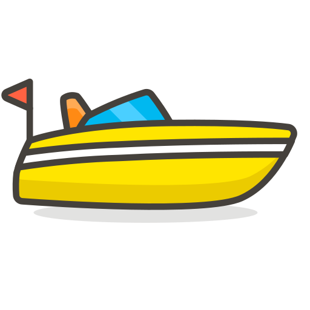

Sendero de los Monos
Es un circuito cerrado que comienza en la seccional de Guardaparques. Se demora aproximadamente 1 Hora en recorrerlo y son unos 600 metros de recorrido. Hay una detalla descripcion de la fauna local, con sus caracteristicas y tambien pueden observarse Monos Carayá/Aullador (mirando las copas de los arboles con detenimiento), Ciervos, Guazunchos, Armadillos, Aves, Carpinchos, Mariposas y otros insectos. Cuando el sol esta en el horizonte el macho Carayá (negro) hace aullidos de los cuales deriva su nombre.
Es importante llevar repelente de insectos, gorro y agua. Consultar horarios en Guardaparques, es recomendable ir por la mañana o por la tarde.
No posee costo alguno.
Sendero Corto y Pasarela
El circuito comienza en la seccional de Guardaparques. Se demora aproximadamente 2 Horas en recorrerlo y son unos 3000 metros de recorrido. Se transita por una pasarela sobre la Laguna Iberá donde pueden verse Yacarés Overos y Yacarés Negros, Ciervos, Guazunchos, gran cantidad de Aves, Carpinchos, Mariposas y otros insectos. En dirección opuesta al Sendero de los Monos, este sendero se desplaza por la rivera de la laguna y una vez finalizado se inicia el "Sedero Corto" atravesando el pastizal.
Es importante llevar repelente de insectos, gorro y agua. Consultar horarios en Guardaparques, es recomendable ir por la mañana o por la tarde.
No posee costo alguno.
Sendero Largo / Refugio-Mirador
El circuito comienza en la seccional de Guardaparques. Se demora aproximadamente 2 Horas en recorrerlo y son unos 4000 metros de recorrido. Este sendero, que comienza en el mismo sitio que el anterior, y es una continuación, termina nuevamente en la laguna. Se llega hasta un mirador y refugio de fotografós, con vista directa a la zona de cria del Chajá y otras aves anfibias
Es importante llevar repelente de insectos, gorro y agua. Consultar horarios en Guardaparques, es recomendable ir por la mañana o por la tarde. Por presencia de Yarará es recomendable ir con botas y mirar con detenimiento el lugar donde se pisa.
No posee costo alguno.
 Paseo en Lancha Laguna Iberá
La excursión comienza en el Camping Municipal. Se realiza una recorrida por la laguna, llegando hasta la zona del Refugio-Mirador, pero por agua. Se visita una isla conformada dentro de la laguna, comentando a los visitantes la historia de como se creo la vieja reserva y la fauna/flora que se aprecia a medida que se desarrolla el paseo. Es posible ver Yacarés Overos y Negros, Aves propias del ambiente actuatico y Peces. Se brindan salvavidas.
Debe de llevarse gorro y protector solar. Debe de reservarse esta salida en el Camping Municipal aunque tambien puede ser expontaneo. Es recomendable ir por la mañana o por la tarde.
$500 por persona, mínimo 4 personas, máximo 8.
Paseo en Lancha Rio Miriñay
La excursión comienza en el Camping Municipal. Se realiza una recorrida por la laguna, se cruza el puente ruidoso y se va con destino al rio mencionado. A diferencia de la excursión anterior en esta se ven cantidad de ejemplares de Yacarés Overos y Negros, como asi tambien Ciervos en su habitat natural. Es una visita guiada, explicativa, un tanto mas extensa que la anterior. Al final del recorrido se desciende de la embarcación y se realiza una pequeña caminata para ver de cerca a los Ciervos.
Debe de llevarse gorro y protector solar. Debe de reservarse esta salida en el Camping Municipal aunque tambien puede ser expontaneo. Es recomendable ir por la mañana o por la tarde.
$500 por persona, mínimo 4 personas, máximo 8.